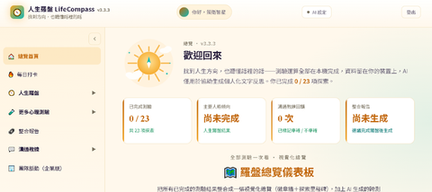
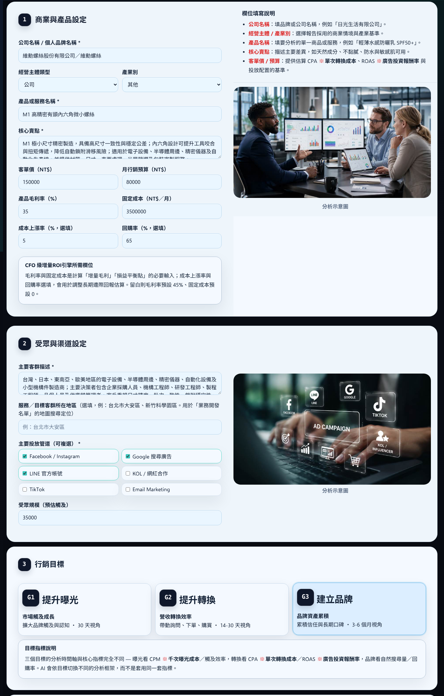
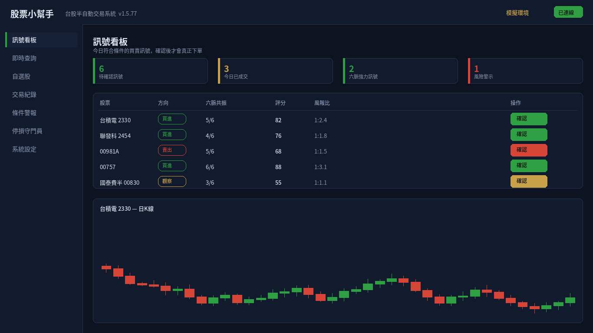
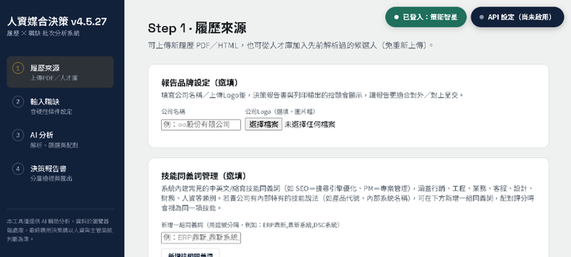
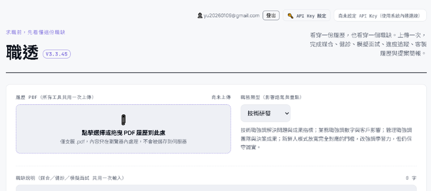
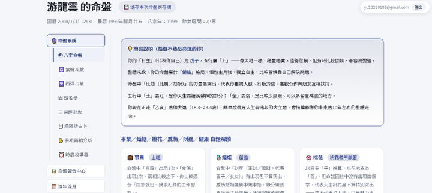

我是企業
關心效率、風險、人才、流程與治理。從一個高頻痛點開始導入，再逐步擴張。
這不是註冊，也不是權限限制。先選擇你的使用情境，澄思 AI Studio 才能把真正與你有關的 AI 工具、案例與行動入口排在前面。
我們不先問你想用哪個 AI，而是先理解你要解決的工作。
不替你決定；先把資訊、選項、風險與你的在意之處整理清楚。
一個行銷決策、一個資安告警、一套混亂流程、一場面試、一個人才判斷，甚至是一個只有你自己知道有多難的選擇。從真實問題開始，才有真正的產品價值。
請直接用你平常說話的方式描述，不需要懂 AI。
以下是依你剛才描述的問題所匹配的 AI 工具。
如果你的問題不在現有工具裡，我們不會硬塞一個產品給你；先理解你的流程，再一起設計適合的 AI 應用。
AI 不只回答問題，也可以把資訊、選項與下一步整理成一個更清楚的決策空間。
讓每一次重要選擇，都有一個更清楚的起點。
一個老闆知道營收下滑，卻不知道先動價格、渠道還是產品；一個工程師看到告警，卻不知道哪一個值得立刻處理；一個 HR 怕漏掉好人才，也怕自己不小心被第一印象影響；一個求職者被拒絕幾次後，開始懷疑「是不是我不夠好」。這些場景共同缺的，不是聊天，而是把複雜問題整理成下一步的決策能力。
真正稀缺的是注意力。AI 應該先接住整理、比較與風險脈絡，讓人把時間留給關鍵判斷。
把重複分類、摘要、追蹤、交接與準備工作產品化，降低人力摩擦，而不是只增加另一個工具。
好的 AI 不應讓人失去主導權，而是讓人更理解選項、更看見風險、更有底氣做自己的決定。
不需要先理解 AI 技術。只要知道你現在想解決的是哪一類問題。
輸入你正在面對的問題，選一種情境；系統會先給你一份「應該先看什麼」的快速提示。這是體驗入口，不是 AI 最終判斷。
澄思把資訊、脈絡、選項、風險與行動串起來。不是把答案說得更漂亮，而是讓答案更有來由、更能被討論、更能進入工作。
這就是我們認為 AI 最有商業價值的地方：替人減少認知摩擦，替企業減少流程摩擦。
首頁不再把 8 個產品當成 8 個同等主角；先讓訪客看懂兩個企業核心場景。
你的選擇會決定首頁主要展示的 AI 工具與 CTA。
痛點： 一次次沒有回覆，很容易把方法問題變成自我否定。
價值： 把履歷、職缺、ATS 與面試準備變成可持續改善的流程。
看完整商業場景 →
信任不是頁尾的一段話，而是產品本身的功能。
讓使用者知道哪些來自模型、資料、規則或人工判斷。
高影響場景保留人工覆核與例外處理，不把 AI 輸出包裝成最終答案。
透過權限、紀錄與治理機制，讓企業能追蹤關鍵操作與判斷依據。
真正的故事是：用 8 個真實場景驗證需求，用共同底座降低重複建設，再把能力透過訂閱、SaaS、API 與白標帶進更多工作流程。
每個產品先解一個具體問題：少整理、少遺漏、少猜測、多準備、多可解釋。
理解、推理、工作流、記憶與治理可以跨垂直產品重用，讓產品矩陣具有共同底層。
當第三方可以透過 API、白標與企業整合使用能力，價值不再只存在於自有前台。
一個行銷決策、一個資安告警、一套混亂流程、一場面試、一個人才判斷，甚至是一個只有你自己知道有多難的選擇。從真實問題開始，才有真正的產品價值。
選一個問題，開始探索 →
你不是不懂行銷。你只是每天都要在有限預算、有限時間裡做太多判斷。廣告該加碼還是停掉？轉換率下降，到底是客群、素材，還是渠道出了問題？你真正需要的不是更多數字，而是把數字整理成可以拿去討論的選項。
你不是沒有想法，而是沒有時間把每個數字都拆開。你需要一個地方，把資料整理成可以討論的選項。
真正消耗你的，往往不是策略，而是一次又一次從零整理資料。把時間還給客戶與創意。
決策的底氣，來自看得懂的數據與說得出的理由。
告警響了。你看著螢幕上的代碼，卻不知道它到底有多嚴重。真正讓資安人員疲憊的，不只是告警數量，而是每一次判斷都像只有自己一個人扛著。
最難的不是看到告警，而是不知道它值不值得立刻處理。先把事件說清楚，再決定下一步。
你需要的不只是儀表板，而是可以回看、可以交接、可以說明的紀錄。
鎮夜不是替你保證「不會出事」，而是讓事情發生時，你不必一個人面對。
Email、訊息、表單、審批與提醒散落各處。真正讓小型團隊累的，是永遠擔心漏掉某件重要的事。
Email、訊息、審批一起來時，你最怕的不是忙，而是漏掉。讓系統接住重複的事情。
把流程能力集中起來，先解決真正高頻的工作，再逐步擴張。
你不是需要更多工作。你需要的是少一點事情必須一直記在腦子裡。

你不一定沒有投資知識。有時只是資訊太多、時間太少，真正到了做決定的那一刻，情緒又比分析更大聲。
不用把注意力一直綁在畫面上；設定研究條件後，在需要你看的時候再回來。
把風險規則寫進流程，不是為了預測未來，而是幫助自己遵守事先定下的紀律。
本產品僅供市場資料整理、研究與風險管理輔助，不構成投資建議、買賣邀約或獲利保證。

履歷很多、時間很少時，人工初篩容易受到疲勞與無關資訊影響。公鑑把焦點拉回職務相關條件，讓評估更一致，也讓理由更容易被覆核。
你想把每個人都看清楚，但時間有限。讓系統先整理與職缺相關的資訊，再把注意力留給真正需要人的判斷。
你需要的是可理解的候選人資訊，而不是一個神秘分數。
公平不只是口號，而是讓每一次重要判斷都有機會被好好檢視。

履歷投出去沒有回覆，很容易讓人開始懷疑自己。但有時候問題不是能力，而是履歷沒有把能力說到對方聽得懂的地方。
被拒絕很難受，但不知道原因更難受。把可能的問題拆開，你就多了一個可以改善的方向。
經驗很多不代表容易說清楚。透過練習，把你的價值講成對方聽得懂的故事。
把「石沉大海」變成一個可以被分析、被準備、被改善的過程。
有些關係裡的衝突，不是不在乎，而是不知道如何把真正的感受說出來。人生羅盤提供自我覺察與溝通練習的空間。
先停下來看見自己的感受與反應，再練習用不傷人的方式說出真正想說的話。
從自願參與、資料最小化與一般性支持開始，不把 AI 當成心理治療的替代品。
本產品定位於自我覺察、一般性支持與溝通練習，不提供醫療診斷、心理治療或危機處置。

面對求婚、搬家、轉職、重要活動等人生時刻，人有時需要的不是一個保證答案，而是一個可以整理傳統觀點與個人想法的空間。
你不一定要相信某一種說法；你可以把它當成文化與自我探索的一種參考。
把不同框架放在一起比較，讓你知道自己看到了什麼，也知道哪些只是不同文化脈絡下的解讀。
內容屬文化、娛樂與自我探索參考，不代表科學預測，也不保證任何事件結果。